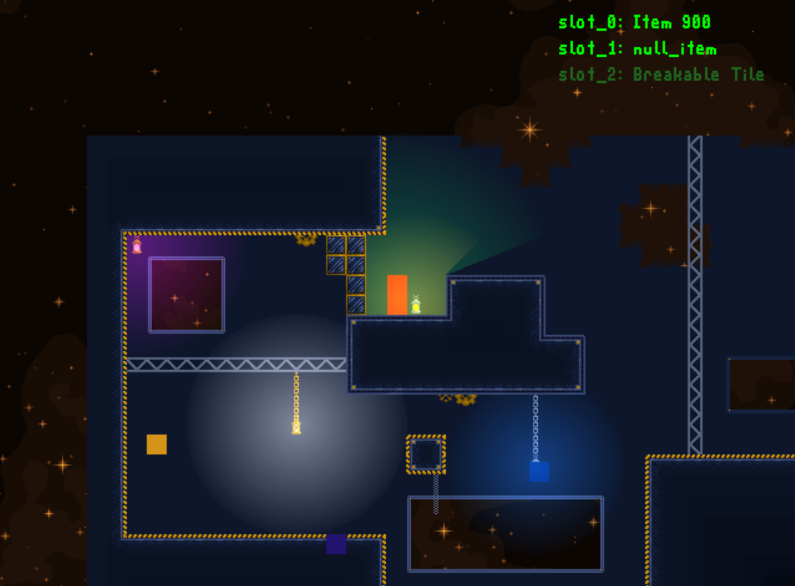

This is a general overview of some of the most important features I have developed. The purpose of this page is just to display the game at its current state, not explain some of the more complex ideas of each feature. For an in-depth look at the game and its features, take a look at the "Updates" tab, where I periodically post updates that I have made, and go into more depth about how things work.

The game, as of August 30, 2023.
Tilemap
The most important piece of any game is the world it takes place in. One of the first features developed was a system to read, store, and render tilemaps to the world. Tilemaps consist of multiple layers, which each consist of many tiles. Each tile has a specific set of properties, and is connected to an image. Together, all the tiles and layers come together to form the tilemap.
Player
The player is able to move and interact with the world. Currently, the player is depicted by a small red square. They can run, jump, fly, and have an inventory.
Camera
The camera defines the region of the world that is currently visible. It constantly follows the player's position, so they cannot run off the screen. Every object within the game (the player, the world, enemies, etc.) is drawn with respect to the camera.
Light
Light adds some style and color to the game. It will also be used as part of the game's mechanics later down the line. Currently, certain tiles can be defined to give off light of a certain size and color. The player can also give off light, although this feature can be toggled on or off.
Tilemaps also include ambient light, which means that tiles "underground" are given a slightly darkened effect. This helps to break up large blocks of one color, and lets the player easily determine what is underground.
Enemies
The enemies of the game give the player an exciting challenge. Typical games have enemies that will detect the player and move towards them, but my game is a little different. Enemies have a certain radius of vision, and they will move towards any light that they can see. Currently, the enemies will move, but do not interact with the player in any way.
Debugging
Debugging is an important part of being able to efficiently develop a program. Despite the fact that these features will not make it into the final game, they have been integral to my success. There are currently 3 debug modes: general debug, light debug, and enemy debug.
General debug mode displays information like the player's position, player's speed, mouse position, and current selected tile.
There is also light debug mode, which shows every tile's light value (0-7 are dark, 8 is neutral, and 9 is lit).
Finally, enemy debug mode highlights tiles that an enemy can see. These tiles allow them to determine which light source to pathfind towards.
Animations
There is currently support to load and display animations, although as of this moment, only specifically defined animated tiles are the only objects that utilize this feature.
Audio
I have constructed an audio player to load and play audio files, however the feature is not currently used, but will be in the future.
Tile Properties
The tilemap is made up of tiles, each of which has their own properties which define how they behave. Most importantly, each tile has a unique id, which differentiates it from all the others. Tiles also have images, a name, a property that says if they are collidable, and a property to say if they are breakable. Lit tiles are given a light color and radius, and animated tiles are given a path to the animation image.
Triggers/Reactions
Triggers and reactions work together to detect the state of the world and react accordingly. Triggers await for some state of the world, and get linked to a reaction. When the trigger becomes true, the reaction will automatically execute.
Levels
Most, if not all, games are made up of some sort of level. Levels contain a tilemap to render, as well as a set of triggers and reactions to look for while that level is running. For this reason, levels are dynamic, as they can have any type of tilemap and trigger/reaction combinations.
Background
The game also features a parallax background, which is visible no matter the player location.